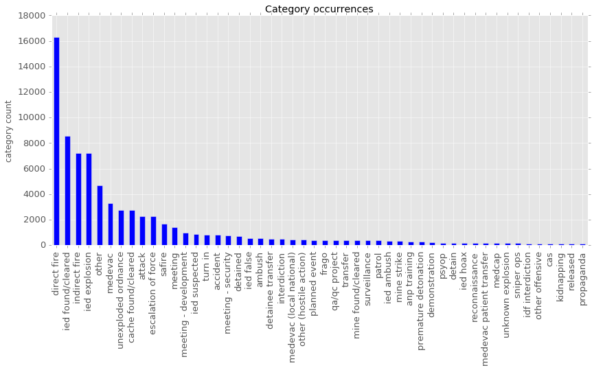

Introduction
In 2010 WikiLeaks released a file that gave access to previously classified military documents pertaining to the Afghanistan war. Especially news organizations where interested but faced a big challenge: How, if possible, could they visually depict some of the information for their readers? [1]
The DTU course social data analysis and visualization gave us the right background knowledge to find out if we also can create interesting visualizations with this dataset.
The analyzed dataset contains every recorded incident between 2004 and 2009 during the war in Afghanistan. The following visualizations were created to get some more sense out of the raw data and the tragedies that occurred during this war that lasted until late 2014. A more in depth analysis regarding the data can be found in a iPython explainer notebook.
Dataset - important properties
This so called war diary is contained in a 74 Mbyte CSV file. It consists of 76911 rows and 34 columns. The most interesting columns contain dates, locations, reports about incidents, parties involved (Afghan forces, ISAF/NATO forces, Taliban and Civilians) and counts of the killed and wounded. A large number of 153 unique categories detail the type of incidents. Especially direct and indirect fire along with different IED (Improvised explosive device) incidents are the most frequent.  Additionally some open data from the elections in Afghanistan 2009 and 2010 helped us to get some numbers of violent incidents for specific voting districts to see where the most dangerous areas for civilians during the elections are. To show some contours on the maps and have some region information a GeoJSON file that was openly published has been used.Casualties of the War
The most tragic thing about a war? People get killed!
Nevertheless by taking a closer look into the death toll we often realize first that every life lost is added on top of the bar chart you see.
The war was a result of the terror attacks in 2001 on the World Trade Centers in New York City lead by Taliban leader Osama bin Laden. After the initial attack the NATO forces with up to 46 countries were gathered as the International Security Assistance Force (ISAF) under U.S. command. This coalition started its major offense in 2006 but the Taliban never got completely defeated [2]. Thus the numbers of killed and wounded in the chart rocketed and rarely declined up to 2009. One of the major problems was the commitment the priority was Iraq first, Afghanistan second. Especially in 2008 the troops where massively increased [3]. The split of the sectors can be viewed in the upcoming map visualization along with the distribution of civilian casualties especially in southern Afghanistan.
One of the worst side effects of war are innocent casualties, civilians that die because they where at the wrong place at the wrong time, it can never be avoided. Although the toll of dead Taliban is much higher one can not disregard the increasing number of dead civilians especially in 2009 when there were elections in Afghanistan. The map you see below covers killed civilians over the course of the war. Every circle actually indicates how many lives were taken. The map is zoomable and interactive, try to hover over the circles and see more information about each incident. With the menu in the top right corner layers can be disabled and tiles switched.
War Categories described in Words
Wounded legs, shots fired, fighting soldier, the firebase "Lilley" in Shkin, according to U.S. Army Colonel Rodney Davis the evilest place in Afghanistan [4]. The category green on green specifies the fights between Afghan police and troops. According to the Guardian and the summaries in the data bad blood, corruption, drugs and poor discipline have led to these cases. [5]
A lot of powerful words that give an impression of the ugly faces of war are displayed in bellow wordcloud of some particular categories that can be selected over the drop down menu.
Voters watch out!
Elections are one of the most fundamental principles of any democracy. The people in Afghanistan who want to make a difference in their war troubled country try to go vote for a change. In the following visualization security incidents during the presidential election in August 2009 were taken. 2009 was the most lethal year since the fall of the Taliban government in late 2001 [6]. The death rate was surpassed again in 2010 when there was the Afghan parliamentary election raising questions of why it was not possible to make public places more secure. Thus we took a closer look using the two datasets introduced before. The map contains spots of all election incidents and has additionally a k-NN grid as overlay that shows most likely war incidents that happen in this area. The K-nearest neighbors algorithm was used to create the visualization only for data from 2009.
Hover over red dots for district information. Click the dot to set a marker to keep track of a specific district.
Making Predictions
Although created under the circumstances during the war there is a lot of useless data. Our group evaluated the best classifier you can chose to predict the right category according to the described event in the summary. Useful for the US-Army to avoid the category "Other" or double meanings like "blue-white" and "blue-on-white" for instance. Usually every report from the military goes into the headquarter for a post analysis. Especially the "significant" activities are analyzed and evaluated by a special group in the command according to the structure of the reports by WikiLeaks. Some machine learning algorithms could help them to optimize their work. The analysis was done for all incidents in Kabul (RC-Capital) from 2004 to 2009. In this highly populated region the army can achieve the highest benefit. Take a look at the map to see clustered areas of enemy (red), friendly (green) and neutral (blue) activities. The map showcases how training data can be used to make useful classifications similar to the one we target with our evaluation in the bar chart. The map will automatically toggle between clustered points for the respective category.Sources
- [1] - Lauren Kirchner, Visualizing the Iraq War Logs, Columbia Journalism Review. [last online accessed: 17.05.2016]
- [2] - Wikimedia Foundation, Inc., , Wikipedia. [last online accessed: 17.05.2016]
- [3] - Wikimedia Foundation, Inc., Reassessment and renewed commitment from 2008, Wikipedia. [last online accessed: 17.05.2016]
- [4] - David Leigh (2010), Afghanistan war logs: 'Green on green' fights between Afghan police and troops, The Guardian. [last online accessed: 17.05.2016]
- [5] - Wikimedia Foundation, Inc., Shkin, Paktika, Wikipedia. [last online accessed: 17.05.2016]
- [6] - Wikimedia Foundation, Inc., Civilian casualties in the war in Afghanistan 2009, Wikipedia. [last online accessed: 17.05.2016]
Links
Datasets
- Afghanistan war diary, CSV file
- Afghanistan map, GeoJSON file
- Afghanistan election incidents, CSV file
Closing technical words
Everything was kept in one HTML document to keep the overview. JS and CSS files are all in one separate file for each visualization. Everything is tested with Chrome 50 it takes a bit to load the page initially but should run smooth after, Firefox 46.0 is working too but has a little bit slower JS engine. Other browsers are untested, our group would appreciate if you keep that in mind while grading.